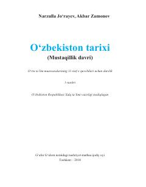

OTO‘rta ta’lim maktablarining 11-sinf o‘quvchilari uchun O‘zbekiston tarixi fanidan rasmiy darslik.
Mazkur darslik umumiy o‘rta ta’lim muassasalarining 11-sinf o‘quvchilari uchun mo‘ljallangan bo‘lib, O‘zbekistonning mustaqillikka erishishi, yangi jamiyatga o‘tish davri, siyosiy va iqtisodiy islohotlar hamda mamlakatning zamonaviy taraqqiyot bosqichlarini yoritadi. Kitobda 1991–2016-yillar va 2017-yildan keyingi davrdagi tarixiy jarayonlar, huquqiy-demokratik davlat qurilishi masalalari atroflicha bayon etilgan.